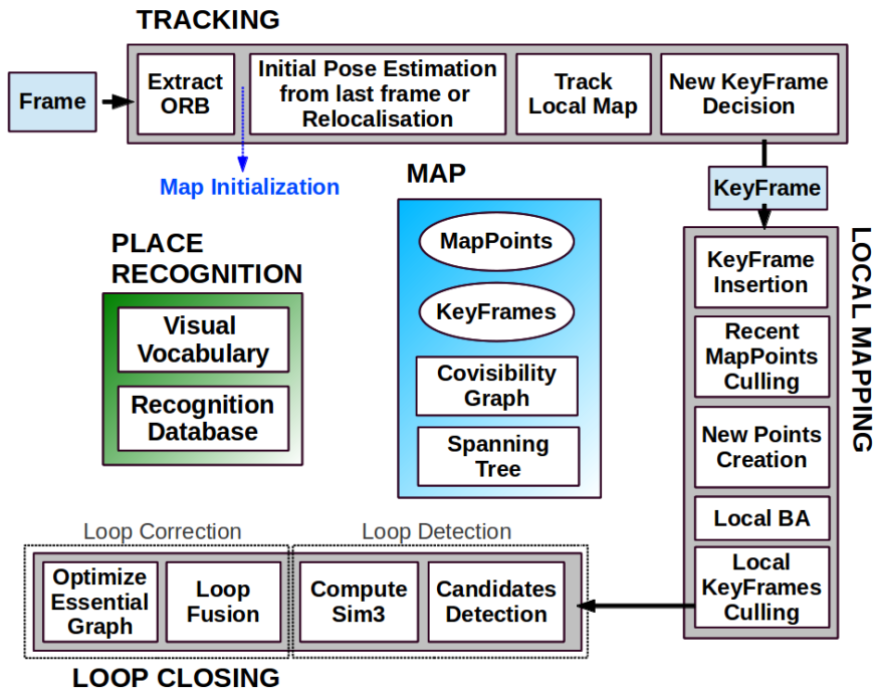

在tracking线程，ORB-SLAM和PTAM一样，也是先构造金字塔（默认8层）再提取特征点（一个常规技巧是把图像划分成网格，不同区域可以有不同的FAST阈值，这样尽量使得提取的特征点分散在图片各个区域）。不同的是，ORB-SLAM在FAST特征点的基础上又提取了ORB描述子，这种描述子在不同观测视角和不同光照条件下有鲁棒的不变性，并且计算速度比SIFT、SURF要快很多。描述子的用途是配合DBoW[2]做特征点匹配和回环检测。具体的说，每个描述子会对应词典里一个单词，词典中的单词以树状结构存储，每个单词对应一个叶节点。这个树状结构有两种检索方式，一种是从图片查单词（每张图片有哪些单词，以及单词对应的图片上特征点的具体编号），另一种是从单词查图片（每个单词在哪些图片被观测到，以及这个单词在这张图片的权重）。当前帧位置姿态的估计方法和PTAM也几乎一模一样，也是把前一帧对应的地图点投影到当前帧（根据匀速运动模型估计了一个初始位置姿态），然后找匹配（ORB匹配，而不是PTAM的patch匹配），找到足够匹配后再优化求解。Track Local Map是把附近更多的地图点投影到当前帧（上一步只涉及前一帧对应的地图点）。这也是近似PTAM从粗到细两轮求解的过程，粗测的优化结果作为精测的初值。在判断当前帧是否是关键帧方面，ORB-SLAM是相对宽松的（在满足PTAM类似的几个小条件的基础上，当前帧的匹配点数量少于关键帧的90%就要考虑插入新关键帧；在2016年的ORB-SLAM2[3]中，根据40倍baseline的距离把地图点分为近点和远点，近点对估计尺度、平移、旋转都有贡献，远点只对估计旋转有贡献。当近点数量少于一个阈值，也要插入新的关键帧），因为关键帧越密集，越不容易跟踪失败。这么做带来的问题是有冗余的关键帧，所以在local mapping线程，会再删去多余的关键帧控制BA的复杂度。
在local mapping线程，插入新关键帧后首先要做的是更新covisibility graph和spanning tree。Covisibility graph是用来描述不同关键帧可以看到多少相同的地图点：每个关键帧是一个节点，如果两个关键帧之间的共视地图点数量大于15，则这两个节点之间建立边，边的权重是共视地图点的数量。Spanning tree是covisibility graph的子集，保留了所有的节点（或者说关键帧），但每个节点只保留和最多共视地图点关键帧之间的边。之后计算新关键帧的词袋（bags of words）描述，也就是建立上一段中“从图片查单词”和“从单词插图片”的检索，这一方面是为了匹配特征点三角化出新的地图点，另一方面是为了回环检测。Recent MapPoints Culling是检验前三个关键帧新生成的地图点（新生成的地图点要接受连续三个新关键帧的检验），如果这些地图点没有通过检验（只能被少数图片观测到）则删去。通过检验的地图点如果被少于三个关键帧观测到也会被删去，这通常发生在删除冗余关键帧和局部BA的情况下，这能保证地图点精准且不冗余。New Points Creation是为新关键帧上没有匹配上地图点的特征点找匹配，如果能从其他关键帧（根据covisibility graph检索共视地图点最多的十个关键帧）找到匹配，且满足一系列约束，则三角化出新的地图点。Local BA的做法和PTAM是一样的，也是把周围的地图点投影到周围的关键帧，让重投影误差最小。这和tracking线程Track Local Map的区别是，这里调整关键帧（位置姿态）和地图点（位置），tracking线程是调整当前帧的位置姿态。Local KeyFrames Culling阶段，如果某个关键帧观测到的90%的地图点都能被其他至少三个关键帧观测到，则被认为是冗余的，会被删去。
在loop Closing线程，会把新关键帧的词袋描述和其他关键帧做比较，如果两个向量足够相似，就说明出现了回环。怎么才算足够相似呢？ORB-SLAM把新关键帧和周围关键帧（covisibility graph里共视地图点大于30个）的最小相似度作为动态阈值，其他关键帧的相似度只有大于这个阈值才有可能是回环关键帧（为了提高鲁棒性，covisibility graph里的连续三个关键帧都必须满足这个条件才可以）。由于新关键帧和回环关键帧之间可以进行ORB匹配，所以他们各自的地图点之间也建立了匹配关系，于是可以优化出两个关键帧之间的变换（2015年的ORB-SLAM只针对单目，会有尺度漂移的问题，所以计算的是相似变换；在2016年的ORB-SLAM2中，如果使用了双目或者RGBD相机，尺度不再是未知数，于是可以直接计算刚体变换）。Loop Fusion阶段，第一步是融合重复的地图点，并且在covisibility graph里补上回环的那条边。然后根据之前计算出的新关键帧和回环关键帧的变换，调整新关键帧及周围关键帧的位置姿态，这样回环的两头就基本对齐了。然后再把回环关键帧附近的地图点投影到新关键帧，把匹配上的地图点融合起来。之后再根据essential graph优化所有关键帧的位置姿态（essential graph是简版的covisibility graph，保留了所有的节点，共视地图点数量大于100才会建立边），把回环误差均摊到所有关键帧上。2015年的ORB-SLAM认为经过essential graph优化之后，精度已经足够高了，在执行全局BA（同时优化所有的关键帧和地图点）意义不大，但是ORB-SLAM2还是加上了全局BA（由于全局BA计算复杂度太高，为了不影响后续的回环检测，又开了个新的线程专门执行全局BA）。跟踪失败后会进入重定位模式，具体重定位的方法和回环检测类似。
ORB-SLAM有两个问题：1）计算复杂度比较高，直接原因是每一帧都提取了描述子。2）实际测试中，ORB-SLAM的抖动（jitter）要比SVO大，个人感觉是因为ORB-SLAM的地图点是简单三角化出来的，额外的约束也只是为了剔除外点而没有进一步的考虑地图点的不确定性，而SVO的深度滤波器从概率分布的角度充分利用了多帧图像，深度不确定性收敛到比较小的区间才会插入地图点。
参考文献：
[1] Mur-Artal R, Montiel J M M, Tardos J D. ORB-SLAM: a versatile and accurate monocular SLAM system[J]. IEEE Transactions on Robotics, 2015, 31(5): 1147-1163.
[2] Gálvez-López D, Tardos J D. Bags of binary words for fast place recognition in image sequences[J]. IEEE Transactions on Robotics, 2012, 28(5): 1188-1197.
[3] Mur-Artal R, Tardós J D. Orb-slam2: An open-source slam system for monocular, stereo, and rgb-d cameras[J]. IEEE Transactions on Robotics, 2017, 33(5): 1255-1262.